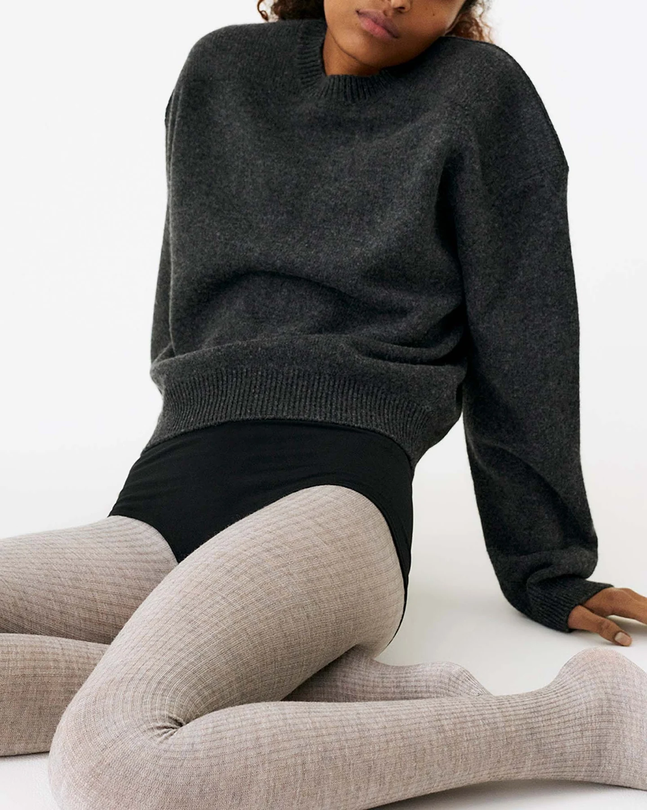
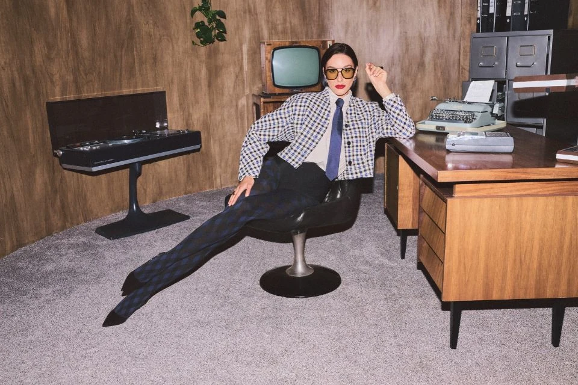

Стиль · 2 мин чтения
Рисунок, который меняет весь образ
Масштаб узора, фон и расстояние: три способа внимательнее рассмотреть фантазийные колготки.
Продолжить с сохранённого места ↓
01
Масштаб важнее названия
Слово «кружево» объединяет очень разные рисунки: мелкую сетку с цветочными мотивами, крупные ветви, плотный орнамент. Издалека мелкий рисунок может сливаться в тон, а крупный оставаться самостоятельным акцентом. Поэтому перед покупкой полезно посмотреть на изображение целиком и только потом увеличивать детали.
В NOQ навигация разделяет горох, цветы, геометрию, сердца, сетку и имитацию чулок. Такой подход помогает описать предпочтение точнее, чем общее слово «фантазийные». У модели Secret один цветочный мотив показан в нескольких оттенках: на чёрном и коричневом фоне его характер воспринимается по-разному.
02
Один узор — несколько сочетаний
Удобная отправная точка — выбрать, чему вы отдаёте главную роль. Если колготки должны быть заметной частью образа, спокойная крупная поверхность юбки или платья оставляет рисунку пространство. Если интересен сложный комплект, можно повторить в одежде один цвет или направление линии. Это приём композиции, а не обязательный дресс-код.
Посмотрите на границу между обувью и ногой. Высота голенища, ремешок и цвет обуви влияют на то, как читается рисунок в нижней части силуэта. Каталожный комплект — один из вариантов стилизации; он не означает, что модель требует именно таких туфель или длины юбки.
03
Узор не рассказывает всю конструкцию
Имитация чулок может быть частью цельных колготок: тёмная нижняя зона и более прозрачный верх создают нужную композицию без отдельной подвязки. И наоборот, внешний вид верхнего края на фотографии не всегда позволяет отличить чулки от колготок. Ищите название типа изделия и снимок целиком.
При примерке рисунок растягивается вместе с полотном. Особенно заметны изменения крупных геометрических ячеек и полос. Сверяйтесь с размерной сеткой производителя и оценивайте комфорт, а не пытайтесь сохранить вид узора из студийного кадра ценой слишком тесной посадки.
04
Соберите маленькую визуальную коллекцию
Выберите в галерее три изображения: мелкий мотив, крупный орнамент и однотонную модель. Сохраните их кнопкой под фотографией. Затем откройте только свою подборку и сравните общий силуэт. Контраст между вариантами помогает понять собственный вкус лучше, чем десятки почти одинаковых кадров.
В просмотре деталей можно приблизить кружево Secret и блестящую модель Calzedonia. У них разные свет и поза, поэтому это исследование рисунка, а не лабораторное сравнение материалов. Авторство каждой фотографии указано рядом с изображением.
Проверить понимание
Имитация чулок обязательно означает два отдельных изделия?
На чём основан материал
Источники просмотрены 15 ноября 2026. Советы по чтению фотографий и сравнению — редакционный разбор; характеристики конкретных изделий проверяйте в карточке производителя.
Продолжение разбора
От идеи — к реальным примерам.
Последнее дополнение:
Соберите сочетание вокруг одного рисунка
- Выберите крупный или мелкий мотив и посмотрите на него с расстояния: какую часть образа он делает главной?
- Сопоставьте рисунок с краем юбки, шортов и высотой обуви. Важно, какая часть узора останется видимой.
- Найдите в одежде один цвет, который поддерживает рисунок. Затем сравните результат с полностью нейтральным верхом.
Что добавилось по теме
Подборка пополняется готовыми русскими обзорами. Оригинальные даты и источники сохранены внутри материалов.

Bracatus
Праздничная Calzedonia: кристаллы, кружево и акцент на колготках
В праздничной подборке Calzedonia колготки становятся заметной частью образа. По публикации Bracatus, в коллекции соседствуют сияющие детали, кружевные узоры и эффекты, напоминающие чулки с подвязками.
Прочитать обзор на ТОНКО →Calzedonia, MODC2242: колготки с кристаллами из раздела Party Collection. Пример декора, который обсуждается в статье. Фото Calzedonia.

bracatuS
Осень–зима 2026/27: цвет и фактура в подборке Bracatus
Bracatus выделяет насыщенные оттенки, рубчик, объёмные узоры и кружево среди направлений холодного сезона. При этом в статье объединены тёплые повседневные изделия и тонкие варианты для вечерних образов.
Прочитать обзор на ТОНКО →Тематическая фотоиллюстрация: Diana Ribbed Wool, Swedish Stockings. Студийный кадр показывает фактуру в рубчик; для прогулки на холоде нужен полноценный комплект верхней одежды и обуви.

Gabriella
Dressing Loud: клетка, цвет и слои в коллекции Gabriella
В коллекции осень–зима 2026/27 Gabriella предлагает строить образ вокруг чулочных изделий. Dressing Loud соединяет крупную клетку, мелкую геометрию, цветные акценты и мягкий блеск.
Прочитать обзор на ТОНКО →Фотография из этой публикации: Gabriella